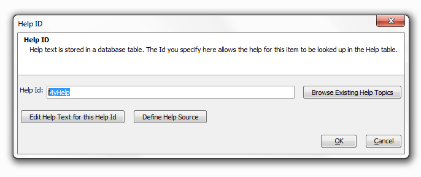
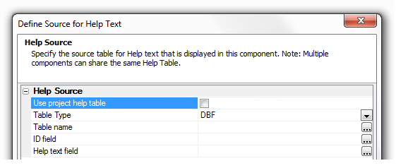

Creating Help for Components
HelpID
|
Creating a Help ID:
1. Type a string into the Help Id: text-box.
2. Click Define Help Source, define the table you will use for your help (see Help Source).
3. Add Text to your Help Id by clicking Edit Help Text for this Help Id. (see Edit Help Text)
4. Alternatively, add an existing help topic by clicking the Browse Existing Help Topics button.
5. Click OK.

The Help ID
|
Help Source
|
Define a Help Source:
1. Open the Define Source for Help Text Dialog.

The Help Source
2. Type a string into the Help Id: text box
3. Click Define Help Source.
4. If you don't want to use a globally defined help table leave Use project help table unchecked.
5. If you want Alpha Anywhere to Create a Help Table for you click the Create Help Table button at the bottom of the screen.

The Create Help Table Button
6. Alternatively, use the dropdown button to select either a DBF or SQL table for your Table Type. With SQL you will also need to define a Connection String.
7. Click the Button next to Table name to choose a help table from existing tables in your project.
8. Click the Button next to ID field to select an ID field from existing fields in the table you selected.
9. Click the Button next to Help text field to select a helptext field from the table you selected for you help.
10. Click OK.
Make a global project-level HelpTopics table:
|
Procedure:
1. Set the global project-level HelpTopics table in Web Project Properties
2. Check the Use project help table checkbox in the Define Source for Help Text dialog.


Edit Help Text
|

Create a Help Text:
1. Open the Help ID dialog. Create a string for the Help Id: textbox and define you Help Source.
2. Click the Edit Help Text for this Help Id button.
3. The Edit Help Text - Help Topic Id: Dialog will open. Fill in any HTML you wish to appear in your help.

Add text to your help with HTML
4. Optionally, open the HTML Editor by pressing the Edit in HTML Editor button.
5. Optionally, add special command directives to make your help more dynamic by clicking the Insert button.

Insert adds Command Directives
Special Command Directives
|
| |
Add a Window Title Directive:
1. Open the Edit Help Text - Help Topic Id: Dialog.
2. click the Insert button and choose the directive you want from the drop-down menu, this example uses Window title.

Directive Menu
3. Replace the default entry in the directive with relevant data. In this case enter a new title.
Before:

After:

4. Click Save. If you go to Working Preview you should see a Window Title in your help dialog when you load it.
Window Title
|
Add a Window Size Directive:
1. Open the Edit Help Text - Help Topic Id: Dialog.
2. Click the Insert button and choose the Window size directive.
3. Replace the filler text in the directive with the Width and Height you want.
Before:
After:
4 Click OK, and OK again, and Save. Go to the Working Preview to see your new Help dialog.
A 6" Wide by 3" Tall Help Created with a Window Size Directive
{LanguageStart:language name} and {LanguageEnd} Language Directives
|
Add a Language Directive
1. Open the Edit Help Text - Help Topic Id: Dialog.
2. Click the Insert button and choose the Language directive - Start.
3. The {LanguageStart:Enter_Language_Name_Here} directive will appear in the "Edit Help Text - Help Topic ID" Dialog
4. Delete the filler text in the directive and replace it with the name of the language you want to use. For example {LanguageStart:French}
5. Click Insert a second time and select Language directive - End. Your code should look something like this.
6. Everything inside these two language tags will be used when this language is active. Fill in the HTML and directives that you want to use.

The French Language Directive
7. Now you need to activate the Language Directive. Go to the Design page menu and under Code select the Server-Side Events page.
8. From the list of Server-Side Events select OnGridExecute, it should be near the top of the list.
9. Copy and paste the following code into the OnGridExecute code displayed. If you identified a different language in {LanguageStart: } then use that instead of French.
|
8. Go to the Working Preview and see the result.
Success!
Use a Session Variable to swap out languages
Go back to Fields in the Design menu tree. Add Custom help to individual fields. Click on a field in Selected list.
Under Display Settings check Has Help button. Show Help icon pops up. Have option of showing help icon. If you choose none the only way to bring up the help will be to press the F1 key. Test it out in Working view. In a desktop application it is fairly well understood that F1 brings up help. In a web application might be too subtle, make icon visible to RightOfControl.
Help Icon Behavior Opens show on click or Mouse over event, if set to click, when you click on the icon you will see the help.
-----------------------------------------------------------------------------------------------
How help appears on screen.
Field Help Window Style Property, help drops down immediately under the field that has focus. Can also go back and change to Mouse over event with dropdown.
--------------------------------------
HelpID
{ConditionStart: condition ID: logical expression} and {ConditionEnd: condition ID}
|
|
Add a Conditional Directive:
Conditional directive and the execute event directive. Return to help text for Firstname field, two condition clauses
{ConditionStart: c1 (id of the condition - arbitrary string): session.var1="alpha"
If Session.var1= "alpha this text will be included in the help file.
and {ConditionEnd:c1 (must be same id as ConditionStart)
can also have nested conditions
{ConditionStart:c2:session.var1="beta"}
{ConditionEnd:c2:session.var1="beta"}
-------------------------------------------------------------------------------vid5
Ability to Nest Condition Clauses is very powerful, helps you create highly dynamic help systems, different for administrator who logs on versus someone who is in a managerial role.
How does this work? session.var1='alpha' vs session.var1="beta" in browser path.
text in help window can be control
Next UDFs return the result of the UDF as part of the text of the help window. Go first to properties and the to Xbasic function declarations. Create a new function and this function will return some dynamic text that we would like to appear in the help window.
{ExecuteFunction: function name}
|
|
Add an Execute Directive:
Xbasic Function Declarations dialog
function myudf as c (e as p)
dim txt as c
txt = "<br><b>This is some dynamic text that was computed on the server.</b>"
txt = txt + "<p>The current date and time is: "+ now() + "</p>"
myudf = txt
end function
This function has to have a prototype that takes e as an argument so when this function executes this object e gets passed in and it contains request .variables and session variable, and useful information. Call this udf when the function text is fetched on the server.
Copy udf name to clipboard. Go back to help for firstname field. Insert execute directive, put the name of the myudf function here. When help is displayed the directive will be replaced by the result of the call to this myudf function
can create extremely dynamic help stystems
------------------------------------------vid 6
Custom Help Windows in Action Javascript
|
|
Using Action Javascript in a Help page:
Custom help windows in action javascript
Insert new button in Grib Builder Selected list
Call this button show a help topic
Go to Field Properties Javascript OnClick and add a new action
Open a Help Window action - click on it OK
HelpID at top of list, give it Helpid name
Edit Help Text
"this is help for the custom button"
can define some other properties for size of window, add other Javascript events. able to incorporate these help windows into your own action javascript.
======================
Custom help feature pack to add custom help systems. Add a button to bring up a help page for a grid or help for individual fields that can be accessed through F1 key.
---------------------vid 2
Help Tables Help Source video 1
Help Tables and Javascript actions video 5